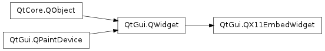

QX11EmbedWidget¶

Synopsis¶
Functions¶
- def containerWinId ()
- def embedInto (id)
- def error ()
Signals¶
- def containerClosed ()
- def embedded ()
- def error (error)
Detailed Description¶
The PySide.QtGui.QX11EmbedWidget class provides an XEmbed client widget.
XEmbed is an X11 protocol that supports the embedding of a widget from one application into another application.
An XEmbed client widget is a window that is embedded into a container . A container is the graphical location that embeds (or swallows ) an external application.
PySide.QtGui.QX11EmbedWidget is a widget used for writing XEmbed applets or plugins. When it has been embedded and the container receives tab focus, focus is passed on to the widget. When the widget reaches the end of its focus chain, focus is passed back to the container. Window activation, accelerator support, modality and drag and drop (XDND) are also handled.
The widget and container can both initiate the embedding. If the widget is the initiator, the X11 window ID of the container that it wants to embed itself into must be passed to PySide.QtGui.QX11EmbedWidget.embedInto() .
If the container initiates the embedding, the window ID of the embedded widget must be known. The container calls embed(), passing the window ID.
This example shows an application that embeds a PySide.QtGui.QX11EmbedWidget subclass into the window whose ID is passed as a command-line argument:
int main(int argc, char *argv[]) { QApplication app(argc, argv); if (app.arguments().count() != 2) { qFatal("Error - expected window id as argument"); return 1; } QString windowId(app.arguments()[1]); EmbedWidget window; window.embedInto(windowId.toULong()); window.show(); return app.exec(); }The problem of obtaining the window IDs is often solved by the container invoking the application that provides the widget as a separate process (as a panel invokes a docked applet), passing its window ID to the new process as a command-line argument. The new process can then call PySide.QtGui.QX11EmbedWidget.embedInto() with the container’s window ID, as shown in the example code above. Similarly, the new process can report its window ID to the container through IPC, in which case the container can embed the widget.
When the widget has been embedded, it emits the signal PySide.QtGui.QX11EmbedWidget.embedded() . If it is closed by the container, the widget emits PySide.QtGui.QX11EmbedWidget.containerClosed() . If an error occurs when embedding, PySide.QtGui.QX11EmbedWidget.error() is emitted.
There are XEmbed widgets available for KDE and GTK+. The GTK+ equivalent of PySide.QtGui.QX11EmbedWidget is GtkPlug. The corresponding KDE 3 widget is called QXEmbed.
See also
PySide.QtGui.QX11EmbedContainer XEmbed Specification
- class PySide.QtGui.QX11EmbedWidget([parent=None])¶
Parameters: parent – PySide.QtGui.QWidget Constructs a PySide.QtGui.QX11EmbedWidget object with the given parent .
- PySide.QtGui.QX11EmbedWidget.Error¶
Constant Description QX11EmbedWidget.Unknown An unrecognized error occurred. QX11EmbedWidget.InvalidWindowID The X11 window ID of the container was invalid. This error is usually triggered by passing an invalid window ID to PySide.QtGui.QX11EmbedWidget.embedInto() .
- PySide.QtGui.QX11EmbedWidget.containerClosed()¶
- PySide.QtGui.QX11EmbedWidget.containerWinId()¶
Return type: long If the widget is embedded, returns the window ID of the container; otherwize returns 0.
- PySide.QtGui.QX11EmbedWidget.embedInto(id)¶
Parameters: id – long
- PySide.QtGui.QX11EmbedWidget.embedded()¶
- PySide.QtGui.QX11EmbedWidget.error(error)¶
Parameters: error – PySide.QtGui.QX11EmbedWidget.Error
- PySide.QtGui.QX11EmbedWidget.error()
Return type: PySide.QtGui.QX11EmbedWidget.Error Returns the type of error that occurred last. This is the same error code that is emitted by the PySide.QtGui.QX11EmbedWidget.error() signal.
See also
QX11EmbedWidget.Error